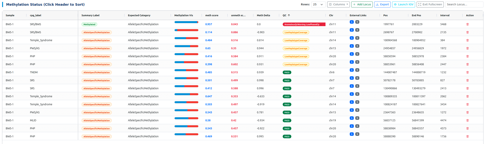

GMS nallo Methylation Dashboard¶


This tool is a comprehensive web-based platform designed for the clinical review and interpretation of methylation data generated by the GMS nallo pipeline. It bridges the gap between raw bioinformatics output and clinical reporting by providing a highly interactive and visually rich dashboard.
🔬 Purpose¶
The dashboard is built to support clinical genomicists in: - Reviewing Allele-Specific Methylation (ASM) loci. - Visualizing haplotagged long-read data in IGV. - Validating QC metrics for specific genomic regions. - Integrating external population data from gnomAD and NCBI.
📊 Dashboard Features¶
The dashboard is packed with features designed for clinical efficiency:
Summary & Visualization¶
- Summary Cards: Real-time statistics including haplotype averages and QC pass tallies.
- Distribution Chart: Visual breakdown of loci by methylation status.
- Integrated IGV Viewer: Embedded IGV-Web instance with 4-step guided setup for phased 5mC visualization.
Interactive Triage Table¶
- External Links: One-click access to gnomAD (G) and NCBI (N).
- CRUD Operations: Manually add, edit, or remove loci for clinical reporting.
- Dynamic Controls: Drag-and-drop column re-ordering, visibility toggling, and CSV export.
🐍 Installation & Setup¶
Requirements¶
- Python 3.7+: Uses only built-in modules (
json,csv,pathlib,argparse). - Browser: Modern browsers like Chrome, Firefox, or Edge.
Getting the Code¶
git clone https://github.com/GMS-CGL/gms-nallo-methylation-dashboard.git
cd gms-nallo-methylation-dashboard
🚀 Usage Guide¶
Basic Command¶
Run the manager script to generate individual sample reports:
python3 scripts/nallo_methylation_manager.py \
--results /path/to/nallo_results \
--template templates/dashboard-template.html \
--output results/reports/
CLI Parameters¶
| Argument | Description | Mandatory | Default |
|---|---|---|---|
--results |
Path to gms-nallo results directory. |
Yes | - |
--template |
Path to dashboard-template.html. |
Yes | - |
--output |
Destination for reports (file or directory). | No | SAMPLE_ID_methylation_report.html |
Result Discovery¶
The script automatically scans methylation/ folder, tables/, and the results root for .methbat profile files (TSV or CSV).

📝 Metadata¶
- Author: Jyotirmoy Das
- Organization: Bioinformatics Core Facility, Linköping University | Clinical Genomics Linköping (CGLi)
- Last Updated: 2026-05-07
- Version: v0.2.3